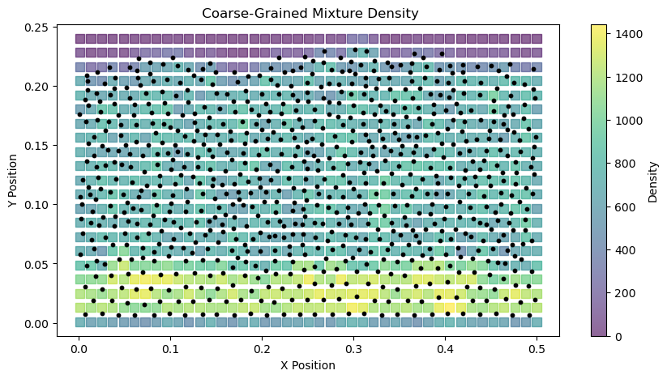
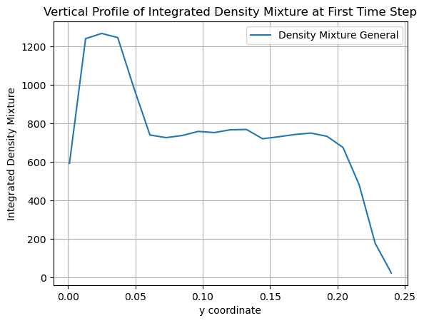
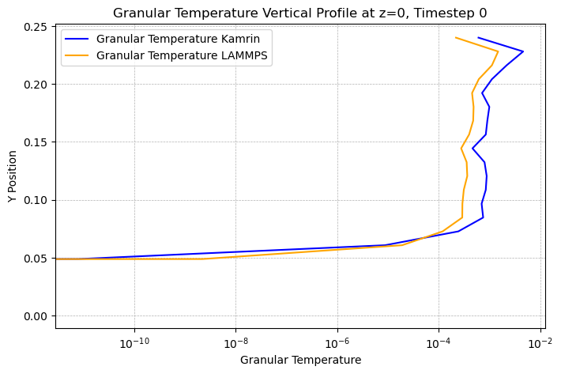
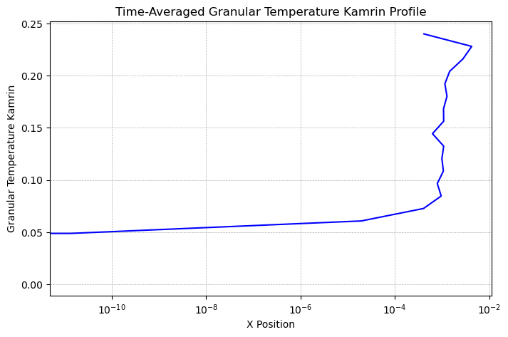
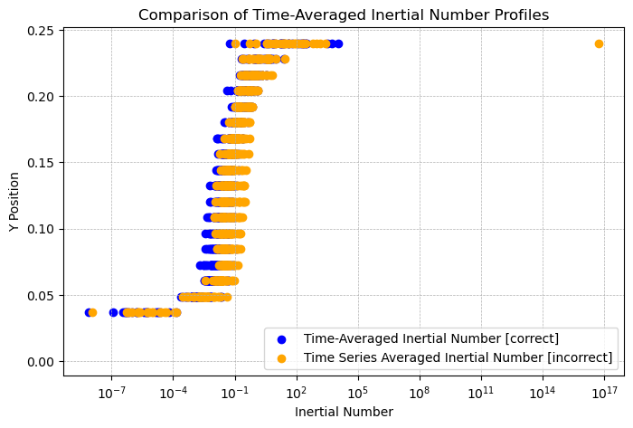

2D coarse graining of bedload transport
In this example, we demonstrate how to use the CoarseGraining to perform coarse graining on a 2D bedload transport simulation with periodic boundaries, and plot the results. In order to do that, you can use the compute_CG.ipynb Jupyter notebook provided in the examples/bedload_transport directory.
The files required for this example can be found in the examples/bedload_transport directory of the repository:
The DEM simualtion data files in the
examples/bedload_transport/DEM_datadirectoryThe configuration file
config.iniin theexamples/bedload_transportdirectory
Import packages
First, ensure you have the necessary libraries installed:
[1]:
from pysammos.utils.config_loader import load_config
from pysammos.coarse_graining import CoarseGraining
from pysammos.data_write.h5.writer import H5XarrayManager
from pysammos.post_averaging.profiles import VerticalIntegrator
Hello from pysammos
Loading macroscopic_fields package...
Loading data_read package...
Loading particle_phase package...
Loading spatial_weights package...
Loading neighbour_search package...
Loading grid_generation package...
Loading data_handle package...
Loading data_write package...
Loading post_averaging package...
[2]:
import numpy as np
import matplotlib.pyplot as plt
import pyvista as pv
Completing the Configuration file
Before running the coarse graining, ensure that the config.ini file is properly set up. The configuration file contains various sections, marked by headers in square brackets.
The paths section specifies the input and output file paths.
[paths]
particles_path = ../data_examples/bedload_transport/DEM_data/DES_FB1_
contacts_path = ../data_examples/bedload_transport/DEM_data/ENTIRE_DOMAIN_
output_path = ./PysammosCG/
Re-running the coarse graining: Pysammos writes its results to output_path. If you have already run the workflow and want to run it again with a different number of time steps, a different spatial scale (grid/kernel width) or different exported variables, either change output_path to a new folder name (e.g. ./PysammosCG_run2/) or delete the previous results first.
The timesteps section defines the time range and interval for the coarse graining process. t0 is the starting timestep, tf is the ending timestep, and dt is the timestep interval. Note that the t_pad parameter is used to specify the number of zero-padding to be added to the t0 and tf values when reading the DEM simulation data files. This is useful when the timestep numbers in the filenames have leading zeros.
[timesteps]
t0 = 150
tf = 152
dt = 1
t_pad = 4
The smoothing_function section defines the type of smoothing function to be used for coarse graining. In this case, we are using the Lucy function. Find the corresponding documentation in the page kernels_module.
[smoothing_function]
type = Lucy
The flags section defines the partialignore flag, which indicates whether to ignore particle phases during the coarse graining process. It will force the number phases to be one if it is set to True.
[flags]
partialignore = True
The key_mapping section maps the DEM simulation data fields to the expected keys used in the coarse graining process.
[key_mapping]
Global_ID = Particle_ID
Particle_Velocity = Velocity
Particle_Diameter = Diameter
Particle_Density = Density
Particle_Volume = Volume
Particle_Mass = Mass
Particle_Radius = None
Coordination_Number = None
Particle_i_ID = Particle_ID_1
Particle_j_ID = Particle_ID_2
Force_ij = FORCE_CHAIN_FC
Contact_ij = FORCE_CHAIN_CONTACT_POINT
The DEM_software section specifies the DEM software used for the simulation. In this case, it is set to mfix.
[DEM_software]
software = mfix
The grid_info section specifies the grid parameters for the coarse graining process, including the grid dimensions, axes, and boundaries.
The
grid_dimensionis set to '2' for a 2D simulation.The
grid_axesare set to 'xy', indicating that the coarse graining will be performed in the x and y directions.The
automatic_gridis set toFalse, allowing for manual specification of grid boundaries.The
x_min,x_max,y_min, andy_maxparameters define the spatial extent of the grid.The
z_transectis set to '0.0', indicating that the coarse graining will be performed at this z-level.The
x_axis_periodicis set to 'True', indicating that the x-axis is periodic, while the y and z axes are non-periodic.
Find the corresponding documentation in the following page: grid_generation.
[grid_info]
grid_dimension = 2
grid_axes = xy
automatic_grid = False
x_min = 0.00105
x_max = 0.5
y_min = 0.001
y_max = 0.24
z_min = None
z_max = None
x_transect = None
y_transect = None
z_transect = 0.0
x_axis_periodic = True
y_axis_periodic = False
z_axis_periodic = False
The simulation_box section specifies the limits of the DEM simulation box, required on every periodic axis in [grid_info]
[simulation_box]
x_range = 0, 0.5
y_range = None
z_range = None
The fields_to_export section specifies which coarse-grained fields to export.
[fields_to_export]
volume_fraction = True
density_particle = False
density_mixture = True
momentum_density = False
velocity = True
velocity_gradient = True
kinetic_tensor = False
contact_tensor = False
total_stress_tensor = True
pressure = True
granular_temperature = True
granular_temperature_slices = True
fabric_tensor = True
inertial_number = True
coordination_number = False
d43 = False
d32 = False
frictional_coefficient = True
shear_rate_tensor = False
The output_options section defines the output formats for the coarse-grained data, including vkthdf and h5 formats. Additionally, time_average defines whether time-averaged quantities will be exported into seperate files.
[output_options]
vkthdf_output = True
h5_output = False
time_average = True
Run the coarse graining
1) Initialise the CoarseGraining class
We should initialize the configuration and the coarse graining object. You can either do it through the configuration file and the load_config function, or you can directly input the parameters (that you have entered in the configuration file) into the CoarseGraining class arguments.
[ ]:
# Load the configuration from the ini file
cfg = load_config("./config.ini")
# Initialize the CoarseGraining class with the loaded configuration
CG = CoarseGraining(
particle_path=cfg["particle_path"],
contacts_path=cfg["contacts_path"],
output_path=cfg["output_path"],
start_timestep=cfg["start_timestep"],
end_timestep=cfg["end_timestep"],
dt_time_step=cfg["dt_time_step"],
t_pad=cfg["t_pad"],
DEM_keymap=cfg["DEM_keymap"],
DEM_software=cfg["DEM_software"],
grid_info=cfg["grid_info"],
weight_function=cfg["weight_function"],
fields_to_export=cfg["fields_to_export"],
simulation_box=cfg["simulation_box"],
time_average=cfg["time_average"],
ignore_phases=cfg["ignore_phases"],
h5_output=cfg["h5_output"],
vkthdf_output=cfg["vkthdf_output"],
)
Output path already exists: ./PysammosCG/
If you use the load_config to load the configuration file entries, you can input the CoarseGraining arguments directly:
[7]:
cfg = load_config("config.ini")
CG = CoarseGraining(**cfg)
Output path already exists: ./PysammosCG/
2) Run the coarse-graining workflow
Option A: using a single command
Next, we can perform the coarse graining on the simulation data. You can either do it with a single command:
[8]:
CG.run()
Starting coarse-graining process...
Sampling data for the first time step to obtain particle properties and bounds ...
XML-based PolyData detected.
... initial particle data sampled
... particle size statistics computed
Ignoring phases. Using mean density and d50 as phase.
... particle phases identified
... coarse-graining resolution set: w/d = 0.75
Generating Grid with Customised Grid Ranges
Customised grid bounds: x = [0.00105, 0.5], y = [0.001, 0.24], z = [None, None], x_transect = None, y_transect = None, z_transect = 0.0
... grid generated
-------------------- Calculating Coarse Grained Fields --------------------
---> Time step 0: time 0150 ................................................
Loading data ...
Particle data loaded
Repeated pairs in contact data: 1142
Contact data loaded and mapped
Coordination number not required. Skipping its calculation.
... data loaded
Matching particles to grid points ...
Periodic axes: x
... particles assigned to grid nodes
Computing weights ...
Using Lucy kernel with cutoff 0.024164815722222066 and search sampling factor 1000
... weights computed
Computing Coarse Graining fields...
volume fraction done
mixture density done
momentum density done
velocity done
velocity gradient done
kinetic tensor done
contact tensor done
d43 done
d32 done
frabric tensor done
particle density done
total stress done
pressure done
granular temp done
shear rate done
inertial number done
mu done
... fields computed
Writing results for timestep 150...
/exports/csce/datastore/geos/users/s1857688/Coarse_Graining/pysammos/pysammos/macroscopic_fields/gridded/derived_fields.py:222: RuntimeWarning: divide by zero encountered in divide
out[f"frictional_coefficient_{s_name}_P{p_name}"] = tau / out[f"pressure_{p_name}"]
File successfully updated to ./PysammosCG/CG_Lucy_Monodisperse.h5
Warning: VTKHDFWriter promoting 2D ImageData (nz=1) to thin 3D (nz=2) for VTK compatibility.
File successfully written to ./PysammosCG/CG_Lucy_Monodisperse_0150.vtkhdf
... results written
... primary fields added to time average accumulator
File successfully updated to ./PysammosCG/CG_GranularTemperature_slices.h5
File successfully written to ./PysammosCG/CG_GranularTemperature_slices.h5
>> time step 0 took 7.185056924819946 to run.
---> Time step 1: time 0151 ................................................
Loading data ...
Particle data loaded
Repeated pairs in contact data: 1140
Contact data loaded and mapped
Coordination number not required. Skipping its calculation.
... data loaded
Matching particles to grid points ...
Periodic axes: x
... particles assigned to grid nodes
Computing weights ...
Using Lucy kernel with cutoff 0.024164815722222066 and search sampling factor 1000
... weights computed
Computing Coarse Graining fields...
volume fraction done
mixture density done
momentum density done
velocity done
velocity gradient done
kinetic tensor done
contact tensor done
d43 done
d32 done
frabric tensor done
particle density done
total stress done
pressure done
granular temp done
shear rate done
inertial number done
mu done
... fields computed
Writing results for timestep 151...
File successfully updated to ./PysammosCG/CG_Lucy_Monodisperse.h5
Warning: VTKHDFWriter promoting 2D ImageData (nz=1) to thin 3D (nz=2) for VTK compatibility.
File successfully written to ./PysammosCG/CG_Lucy_Monodisperse_0151.vtkhdf
... results written
... primary fields added to time average accumulator
File successfully updated to ./PysammosCG/CG_GranularTemperature_slices.h5
File successfully written to ./PysammosCG/CG_GranularTemperature_slices.h5
>> time step 1 took 0.3378298282623291 to run.
Writing time averages over 2 time steps (150 to 151) ...
particle density done
total stress done
pressure done
granular temp done
shear rate done
inertial number done
mu done
Writing results for time_averaged...
File successfully updated to ./PysammosCG/CG_Lucy_Monodisperse_time_averaged.h5
Warning: VTKHDFWriter promoting 2D ImageData (nz=1) to thin 3D (nz=2) for VTK compatibility.
File successfully written to ./PysammosCG/CG_Lucy_Monodisperse_time_averaged.vtkhdf
File successfully updated to ./PysammosCG/CG_GranularTemperature_slices_time_averaged.h5
Coarse-graining process completed, summary:
>>> Number of grid points: 903
>>> Total run time: 7.69 seconds
>>> Number of cores used: 2
Option B: running each step separately
Load the size-relevant particle data for the first time step
[9]:
Bounds_t0, Diameter_t0, Density_t0, Mass_t0, GlobalID_t0 = CG.data_sampling()
Sampling data for the first time step to obtain particle properties and bounds ...
XML-based PolyData detected.
Calculate the particle size range
[10]:
CG.get_particle_size_statistics(Diameter_t0, Mass_t0)
print(">> Particle size statistics: ")
print(" d43: ", CG.d43)
print(" dmax: ", CG.dmax)
print(" d50: ", CG.d50)
print(" d32: ", CG.d32)
print(" drms: ", CG.drms)
>> Particle size statistics:
d43: 0.01651367411185649
dmax: 0.019993
d50: 0.016306963
d32: 0.016109877148148044
drms: 0.015422490500786803
Get the phases
[11]:
CG.get_particle_phases(Diameter_t0, Density_t0, GlobalID_t0, 8)
print(">> Phases: ")
print(" Diameters: ", CG.phases[:,0])
print(" Densities: ", CG.phases[:,1])
Ignoring phases. Using mean density and d50 as phase.
>> Phases:
Diameters: [0.01610988]
Densities: [2700.]
Calculate the CG grid spacing
[12]:
CG.set_resolution(CG.d32) # here you can input different number, to make w and c bigger or smaller
print(">> Coarse Graining resolution: ")
print(" c:", CG.c)
print(" w:", CG.w)
>> Coarse Graining resolution:
c: 0.024164815722222066
w: 0.012082407861111033
Generate the CG grid
[13]:
CG.generate_grid()
print(">> Grid: ")
print(" Grid Points: ", CG.GridPoints.shape, "First Point: ", CG.GridPoints[0])
print(" Nodes: ", CG.Nodes)
print(" Spacing: ", CG.Spacing)
Generating Grid with Customised Grid Ranges
Customised grid bounds: x = [0.00105, 0.5], y = [0.001, 0.24], z = [None, None], x_transect = None, y_transect = None, z_transect = 0.0
>> Grid:
Grid Points: (903, 3) First Point: [0.00105 0.001 0. ]
Nodes: [43 21 1]
Spacing: [0.01187976 0.01195 ]
Calculate the CG fields
[14]:
CG.fields_in_time()
-------------------- Calculating Coarse Grained Fields --------------------
---> Time step 0: time 0150 ................................................
Loading data ...
Particle data loaded
Repeated pairs in contact data: 1142
Contact data loaded and mapped
Coordination number not required. Skipping its calculation.
... data loaded
Matching particles to grid points ...
Periodic axes: x
... particles assigned to grid nodes
Computing weights ...
Using Lucy kernel with cutoff 0.024164815722222066 and search sampling factor 1000
... weights computed
Computing Coarse Graining fields...
volume fraction done
mixture density done
momentum density done
velocity done
velocity gradient done
kinetic tensor done
contact tensor done
d43 done
d32 done
frabric tensor done
particle density done
total stress done
pressure done
granular temp done
shear rate done
inertial number done
mu done
... fields computed
Writing results for timestep 150...
File successfully updated to ./PysammosCG/CG_Lucy_Monodisperse.h5
Warning: VTKHDFWriter promoting 2D ImageData (nz=1) to thin 3D (nz=2) for VTK compatibility.
File successfully written to ./PysammosCG/CG_Lucy_Monodisperse_0150.vtkhdf
... results written
... primary fields added to time average accumulator
File successfully updated to ./PysammosCG/CG_GranularTemperature_slices.h5
File successfully written to ./PysammosCG/CG_GranularTemperature_slices.h5
>> time step 0 took 0.15783143043518066 to run.
---> Time step 1: time 0151 ................................................
Loading data ...
Particle data loaded
Repeated pairs in contact data: 1140
Contact data loaded and mapped
Coordination number not required. Skipping its calculation.
... data loaded
Matching particles to grid points ...
Periodic axes: x
... particles assigned to grid nodes
Computing weights ...
Using Lucy kernel with cutoff 0.024164815722222066 and search sampling factor 1000
... weights computed
Computing Coarse Graining fields...
volume fraction done
mixture density done
momentum density done
velocity done
velocity gradient done
kinetic tensor done
contact tensor done
d43 done
d32 done
frabric tensor done
particle density done
total stress done
pressure done
granular temp done
shear rate done
inertial number done
mu done
... fields computed
Writing results for timestep 151...
/exports/csce/datastore/geos/users/s1857688/Coarse_Graining/pysammos/pysammos/macroscopic_fields/gridded/derived_fields.py:222: RuntimeWarning: divide by zero encountered in divide
out[f"frictional_coefficient_{s_name}_P{p_name}"] = tau / out[f"pressure_{p_name}"]
File successfully updated to ./PysammosCG/CG_Lucy_Monodisperse.h5
Warning: VTKHDFWriter promoting 2D ImageData (nz=1) to thin 3D (nz=2) for VTK compatibility.
File successfully written to ./PysammosCG/CG_Lucy_Monodisperse_0151.vtkhdf
... results written
... primary fields added to time average accumulator
File successfully updated to ./PysammosCG/CG_GranularTemperature_slices.h5
File successfully written to ./PysammosCG/CG_GranularTemperature_slices.h5
>> time step 1 took 0.1264181137084961 to run.
Writing time averages over 2 time steps (150 to 151) ...
particle density done
total stress done
pressure done
granular temp done
shear rate done
inertial number done
mu done
Writing results for time_averaged...
File successfully updated to ./PysammosCG/CG_Lucy_Monodisperse_time_averaged.h5
Warning: VTKHDFWriter promoting 2D ImageData (nz=1) to thin 3D (nz=2) for VTK compatibility.
File successfully written to ./PysammosCG/CG_Lucy_Monodisperse_time_averaged.vtkhdf
File successfully updated to ./PysammosCG/CG_GranularTemperature_slices_time_averaged.h5
Plotting the Results in Python
After running the above code, the coarse-grained fields will be saved in the specified output directory. To visualize the results from the .h5 files, you can use the provided Jupyter notebook visualization_bedload_transport.ipynb in the same directory.
1. Initialize the H5XarrayManager to read the coarse-grained data
[15]:
# gridded data
manager = H5XarrayManager("./PysammosCG/CG_Lucy_Monodisperse.h5")
bedload_CG = manager.h5_to_xarray()
# time-averaged gridded data
manager_avg = H5XarrayManager("./PysammosCG/CG_Lucy_Monodisperse_time_averaged.h5")
bedload_CG_avg = manager_avg.h5_to_xarray()
# sliced granular temperature data
manager_gt = H5XarrayManager("./PysammosCG/CG_GranularTemperature_slices.h5")
slices_gt = manager_gt.h5_to_xarray()
# sliced granular temperature time averaged
manager_gt_avg = H5XarrayManager("./PysammosCG/CG_GranularTemperature_slices_time_averaged.h5")
slices_gt_avg = manager_gt_avg.h5_to_xarray()
Processing key: density_mixture
Processing key: fabric_tensor
Processing key: frictional_coefficient_01_Pxy
Processing key: frictional_coefficient_01_Pxyz
Processing key: frictional_coefficient_01_Py
Processing key: frictional_coefficient_Dxy_Pxy
Processing key: frictional_coefficient_Dxy_Pxyz
Processing key: frictional_coefficient_Dxy_Py
Processing key: frictional_coefficient_Dxyz_Pxy
Processing key: frictional_coefficient_Dxyz_Pxyz
Processing key: frictional_coefficient_Dxyz_Py
Processing key: granular_temperature_x
Processing key: granular_temperature_xyz
Processing key: granular_temperature_y
Processing key: granular_temperature_z
Processing key: inertial_number_Sxy_Pxy_d32
Processing key: inertial_number_Sxy_Pxy_d43
Processing key: inertial_number_Sxy_Pxyz_d32
Processing key: inertial_number_Sxy_Pxyz_d43
Processing key: inertial_number_Sxy_Py_d32
Processing key: inertial_number_Sxy_Py_d43
Processing key: positions
Processing key: pressure_x
Processing key: pressure_xy
Processing key: pressure_xyz
Processing key: pressure_y
Processing key: pressure_z
Processing key: time
Processing key: total_stress_tensor_xy_dev
Processing key: total_stress_tensor_xy_dev_mag
Processing key: total_stress_tensor_xyz
Processing key: total_stress_tensor_xyz_dev
Processing key: total_stress_tensor_xyz_dev_mag
Processing key: total_stress_tensor_xyz_mag
Processing key: velocity
Processing key: velocity_gradient
Processing key: volume_fraction
Processing key: density_mixture
Processing key: fabric_tensor
Processing key: frictional_coefficient_01_Pxy
Processing key: frictional_coefficient_01_Pxyz
Processing key: frictional_coefficient_01_Py
Processing key: frictional_coefficient_Dxy_Pxy
Processing key: frictional_coefficient_Dxy_Pxyz
Processing key: frictional_coefficient_Dxy_Py
Processing key: frictional_coefficient_Dxyz_Pxy
Processing key: frictional_coefficient_Dxyz_Pxyz
Processing key: frictional_coefficient_Dxyz_Py
Processing key: granular_temperature_x
Processing key: granular_temperature_xyz
Processing key: granular_temperature_y
Processing key: granular_temperature_z
Processing key: inertial_number_Sxy_Pxy_d32
Processing key: inertial_number_Sxy_Pxy_d43
Processing key: inertial_number_Sxy_Pxyz_d32
Processing key: inertial_number_Sxy_Pxyz_d43
Processing key: inertial_number_Sxy_Py_d32
Processing key: inertial_number_Sxy_Py_d43
Processing key: positions
Processing key: pressure_x
Processing key: pressure_xy
Processing key: pressure_xyz
Processing key: pressure_y
Processing key: pressure_z
Processing key: time
Processing key: total_stress_tensor_xy_dev
Processing key: total_stress_tensor_xy_dev_mag
Processing key: total_stress_tensor_xyz
Processing key: total_stress_tensor_xyz_dev
Processing key: total_stress_tensor_xyz_dev_mag
Processing key: total_stress_tensor_xyz_mag
Processing key: velocity
Processing key: velocity_gradient
Processing key: volume_fraction
Processing key: granular_temperature_Kamrin
Processing key: granular_temperature_LAMMPS
Processing key: positions
Processing key: time
Processing key: granular_temperature_Kamrin
Processing key: granular_temperature_LAMMPS
Processing key: positions
Processing key: time
2. Plotting the mixture density field at a specific time step
[16]:
# Create figure and axis
fig = plt.figure(figsize=(10,5))
ax = fig.add_subplot(111)
# Plot DEM particle positions
bedload_DEM = pv.read('../data_examples/bedload_transport/DEM_data/DES_FB1_0150.vtp')
bedload_particles = bedload_DEM.points
x_particle = bedload_particles[:, 0]; y_particle = bedload_particles[:, 1]
ax.scatter(x_particle, y_particle, s=10, c='k', alpha=1, label='Particle Positions', zorder=3)
# Plot the CG data
x = np.asarray(bedload_CG.positions[:, 0])
y = np.asarray(bedload_CG.positions[:, 1])
z = np.asarray(bedload_CG.positions[:, 2])
var = np.asarray(bedload_CG.density_mixture.values[0, :])
sc = ax.scatter(x, y, s=65, c=var,
cmap='viridis', alpha=0.6, label='CG Density',
zorder=1, marker='s')
# Add colorbar and labels
plt.colorbar(sc, ax=ax, label='Density')
ax.set_xlabel('X Position')
ax.set_ylabel('Y Position')
ax.set_title(' Coarse-Grained Mixture Density')
plt.show()

3. Plotting the granular temperature field at a specific time step
The vertical profiles of the coarse-grained fields can be plotted using the following code, which uses the subpackage vertical_profiles. Below we plot the profile of density_mixture of the first time step, after performing vertical intergration to obtain vertical profiles.
[17]:
# Perform vertical integration
VI = VerticalIntegrator(bedload_CG, 'y')
vertical_ds_general = VI.integration()
# plot the profile of density_mixture of the first time step
vertical_ds_general['density_mixture'].isel(time=0).plot.line(x='y', label='Density Mixture General')
plt.xlabel('y coordinate')
plt.ylabel('Integrated Density Mixture')
plt.title('Vertical Profile of Integrated Density Mixture at First Time Step')
plt.legend()
plt.grid()
plt.show()
Starting integration along profile dimension: y
Completed integration along profile dimension: y

4. Plotting the granular temperature slices calculated with other methods
Pysammos provides the granular temperature slices along specified transects using other methods. See the documentation for more details: check the page gran_temp_slices.
[18]:
# plot first time step vertical profile comparing Kamrin and LAMMPS
fig, ax = plt.subplots(figsize=(8,5))
ax.plot(slices_gt.granular_temperature_Kamrin[0,:,0], slices_gt.positions[:, 1], label='Granular Temperature Kamrin', color='blue')
ax.plot(slices_gt.granular_temperature_LAMMPS[0,:,0], slices_gt.positions[:, 1], label='Granular Temperature LAMMPS', color='orange')
ax.set_xlabel('Granular Temperature')
ax.set_ylabel('Y Position')
ax.set_title('Granular Temperature Vertical Profile at z=0, Timestep 0')
#gridlines
ax.grid(visible=True, which='both', linestyle='--', linewidth=0.5)
# log scale x axis
ax.set_xscale('log')
ax.legend()
plt.show()

5. Plotting time-averaged data
Pysammos also calculates time-averaged quantities, below we show how to visualise them:
[19]:
fig, ax = plt.subplots(figsize=(8,5))
ax.plot(slices_gt_avg.granular_temperature_Kamrin[0,:,0], slices_gt_avg.positions[:, 1], color="blue")
ax.set_xlabel('X Position')
ax.set_ylabel('Granular Temperature Kamrin')
ax.set_title('Time-Averaged Granular Temperature Kamrin Profile')
ax.grid(visible=True, which='both', linestyle='--', linewidth=0.5)
ax.set_xscale('log')
plt.show()

Note that time averaging of non-linear fields, e.g. inertial number, is constructred from the time-averaged quantities, instead of taking the time series average of the non-linear field of interest. The difference between these two calculations is shown below:
[20]:
# Calculate time-averaged and time series averaged inertial numbers
I_tav = bedload_CG_avg.inertial_number_Sxy_Pxy_d32[0,:]
I_ts_averaged = bedload_CG.inertial_number_Sxy_Pxy_d32.mean(dim='time')
# plot difference between time-averaged inertial number and time series averaged inertial number
fig, ax = plt.subplots(figsize=(8,5))
ax.scatter(I_tav, bedload_CG_avg.positions[:, 1], label='Time-Averaged Inertial Number [correct]', color='blue')
ax.scatter(I_ts_averaged, bedload_CG_avg.positions[:, 1], label='Time Series Averaged Inertial Number [incorrect]', color='orange')
ax.set_xlabel('Inertial Number')
ax.set_ylabel('Y Position')
ax.set_title('Comparison of Time-Averaged Inertial Number Profiles')
#gridlines
ax.grid(visible=True, which='both', linestyle='--', linewidth=0.5)
# log scale x axis
ax.set_xscale('log')
plt.legend(loc='lower right')
plt.show()
